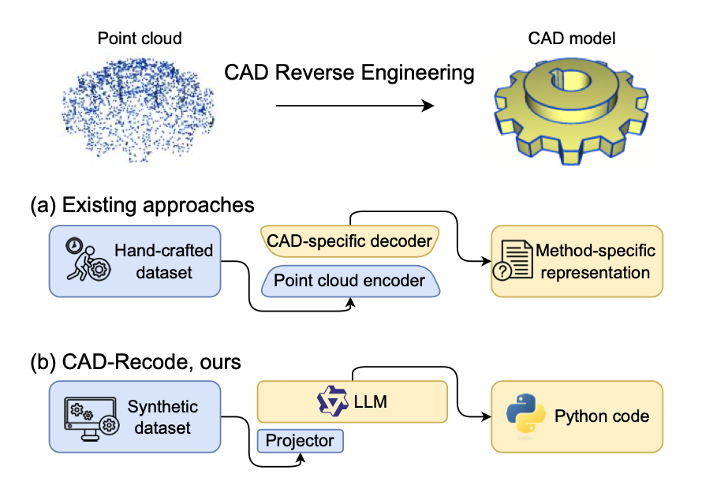
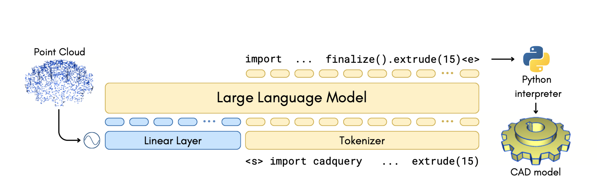

Состоялся релиз CAD Recode — нейросети для генерации САПР-моделей из облака точек
Исследователи Люксембургского университета представили модель машинного обучения CAD Recode, предназначенную для генерации САПР-моделей из облака точек. Также разработчики интегрировали LLM, с помощью которой можно редактировать геометрию моделей.
Модель машинного обучения работает в несколько этапов. Сперва нейросеть переводить облако точек в код на Python, используя библиотеку CadQuery, а после на основе этого создаёт трёхмерную модель. Примечательно, что разработчики интегрировали в проект большую языковую модель на базе Qwen2-1.5B, чтобы полученный код можно было отредактировать. Для обучения модели использовали около миллиона реальных САПР-моделей.


Авторы проекта развернули демо проекта. Пользователи могут загрузить меш и на его основе сгенерировать САПР-модель. Например, такой подход можно использовать для реверс-инжиниринга деталей без 3D-сканирования.

Код проекта открыт и опубликован на GitHub. Помимо этого разработчики поделились текстом исследования. В репозитории представлен простой инференс CAD Recode. Для запуска необходимо установить пакеты из Dockerfile и запустить файл demo.ipynb.